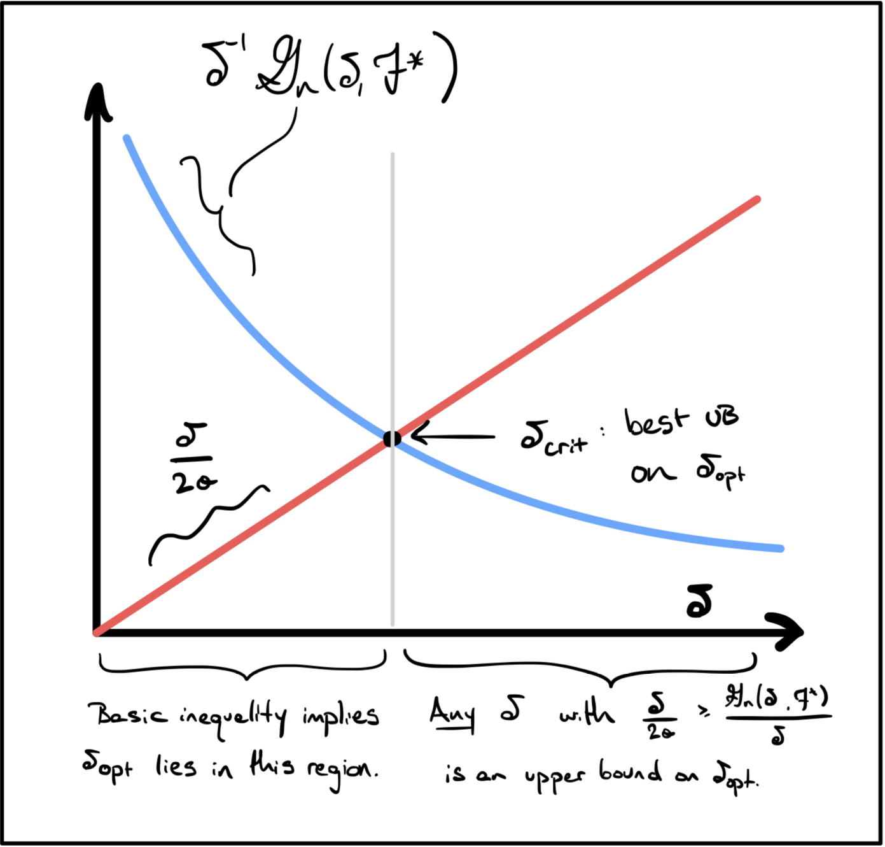

Consider the problem of well-specified fixed design regression, in which we observe data $X =\{(x_i, y_i)\}_{i=1}^n$ of the form $$ y_i = f^*(x_i) + \sigma w_i \qquad w_i \sim \Ncl(0, 1) \text{ i.i.d. and } f^* \in \Fcl $$ for some function class $\Fcl$ that is known a-priori. We would like to analyze constrained least squares estimation, $$ \hat{f} = \arg \inf_{f \in \Fcl} \frac{1}{n}\sum_{i=1}^n(f(x_i) - y_i)^2 $$ and in particular we would like to bound the fixed-design mean-squared error given by $$ \E_{w_1, \ldots, w_n}[\|\hat{f} - f^*\|_n ^2] \coloneqq \E_{w_1,\ldots,w_n}\left[\frac{1}{n}\sum_{i=1}^n (\hat{f}(x_i) - f^*(x_i))^2\right] $$
The standard procedure is to derive first the basic inequality, $$ \|\hat{f}-y\|_n^2 \leq \|f^* - y\|_n^2 \implies \|\hat{f} - f^*\|_n^2 \leq \frac{2\sigma}{n}\sum_{i=1}^n w_i(\hat{f}(x_i) - f^*(x_i)) $$ Next, we could naively bound the right hand side in terms of the Gaussian width of the set $\Fcl^* \coloneqq \Fcl - f^*$ (this is a slight abuse of notation, since we are conflating $\Fcl^*$ with its projection $\{(h(x_1), \ldots, h(x_n)) : h \in \Fcl^*\} \subseteq \R^n$): $$ \E_w[\|\hat{f}- f^*\|_n^2 ]\leq \E_w\left[\sup_{h \in \Fcl^*} \frac{2 \sigma}{n} \sum_{i=1}^n w_i h(x_i)\right] $$ The key idea of localization is that we can derive a better bound by restricting the supremum to $h \in \Fcl^* \cap \{\|h\|_n^2 \leq \|\hat{f} - f^*\|_n^2\}$. Clearly, $\hat{f}-f^*$ belongs to this localized set, so the restricted supremum is still a valid bound on the right hand side of the basic inequality. We define the localized Gaussian width $$ \Gcl_n(\delta, \Fcl^*) \coloneqq \E_w\left[\sup_{h \in \Fcl^*,\ \|h\|_n\leq \delta} \frac{1}{n} \sum_{i=1}^n w_i h(x_i)\right]; $$ for $\delta_{\mathsf{opt}}^2 \coloneqq \E_w[\|\hat{f}-f^*\|_n^2]$, we have now that $\delta_{\mathsf{opt}}^2 \leq 2 \sigma \Gcl_n(\delta_{\mathsf{opt}}, \Fcl^*)$, and the problem is now reduced to finding an upper bound on $\delta_{\mathsf{opt}}$. This is slightly more complicated than simply upper bounding $\Gcl_n(\delta, \Fcl^*)$, which would not actually help in identifying the set $\{\delta > 0 : \delta^2 \leq 2 \sigma \Gcl_n(\delta, \Fcl^*)\}$. Instead, one approach (which we will justify below) is to use the fact that $\delta \mapsto \Gcl_n(\delta, \Fcl^*)/\delta$ is monotonically decreasing whenever $\Fcl^*$ is star shaped. Then, for the choice $$ \delta_{\mathsf{crit}} = \inf\left\{\delta > 0 : \frac{\delta}{2 \sigma} \geq \frac{\Gcl_n(\delta, \Fcl^*)}{\delta}\right\}, $$ we can finally derive that $$ \E_w[\|\hat{f}- f^*\|_n^2 ]\leq (\delta_{\mathsf{crit}})^2. $$ The situation is described graphically in the following picture:

Proposition (localized Gaussian width). Let $\Fcl$ be a function class that is star shaped: $f \in \Fcl \implies \lambda f \in \Fcl$ for all $\lambda \in [0, 1]$. For arbitrary $\{x_1, \ldots, x_n\} \in \mathsf{dom}(\Fcl)$, define the localized Gaussian width by, $$ \Gcl_n(\delta, \Fcl) = \E_w\left[ \sup_{f \in \Fcl,\ \|f\|_n \leq \delta} \frac{1}{n}\sum_{i=1}^n w_i f(x_i) \right] \qquad w \sim \Ncl(0, I_n). $$ Then $\delta \mapsto \Gcl_n(\delta, \Fcl)$ is monotonically decreasing.
Proof. the fact that $\Gcl_n(\delta, \Fcl)$ is star shaped implies that for any $0 \leq s \leq \delta$, $$ \frac{s}{\delta}\Gcl_n(\delta, \Fcl) = \E_w\left[\sup_{f \in \Fcl,\ \|f\|_n \leq \delta} \frac{1}{n}\sum_{i=1}^n w_i \cdot \left(\frac{s}{\delta} f(x_i)\right) \right] \leq \Gcl_n(s, \Fcl) $$ where we used the fact that $s/\delta < 1$ implies $(s/\delta)f \in \Fcl$ and that $\|(s/\delta)f\|_n \leq s$, so $\Gcl_n(s, \Fcl)$ is a supremum over a larger set. The claim follows by dividing by $s$.
We showed the property that $\lambda \Gcl_n(\delta \Fcl) \leq \Gcl_n(\lambda \delta, \Fcl)$, which is sometimes called super-homogeneity. A super-homogeneous function $x \mapsto f(x)$ has $f(x)/x$ monotonically decreasing, whereas a sub-homogeneous function would have $f(x)/x$ monotonically increasing.
Proposition (bounding localized Gaussian width with Dudley entropy). in the setting of the previous proposition, set $\Fcl_\delta^* = \{f \in \Fcl^* : \|f\|_n \leq \delta\}$. Then, $$ \Gcl_n(\delta, \Fcl^*) \leq \frac{6\sqrt{2}}{\sqrt{n}} \int_{\delta^2/4\sigma}^\delta \sqrt{\log \Ncl(\Fcl_\delta^*, \|\cdot\|_n, \eps)} \, d \eps + \frac{\delta^2}{4 \sigma} $$ Consequently, for any $\delta > 0$ such that the entropy integral is at most $\delta^2/4\sigma$, the fixed-design MSE is upper bound by $\delta^2$.
Proof. Let $\eps_k = 2^{-k}$ and choose $m, M$ so that $\eps_{m-1} > \delta > \eps_m > \ldots > \eps_M > \frac{\delta^2}{4 \sigma} > \eps_{M+1}$.
For each, set $\bar{\Fcl}_{\delta, \eps_k}$ a minimal $\eps_k$-cover of $\Fcl_\delta$ with respect to $\|\cdot\|_n$. Set also $\pi_k$ the projection onto $\bar{\Fcl}_{\delta, \eps_k}$ in $\|\cdot\|_n$-norm. We will apply a chaining bound to processes of the form, $$ \begin{aligned} \frac{1}{n}\langle w, f\rangle = \frac{1}{n} \langle w, f-\pi_M(f)\rangle + \frac{1}{n}\sum_{k=m}^M \langle w, \pi_{k}(f) - \pi_{k-1}(f)\rangle \end{aligned} $$ where we have assumed (WLOG) that $\bar{\Fcl}_{\delta, \eps_{m+1}} = \{0\}$ contains only the constant zero function. By Cauchy-Schwartz, the first term is bounded as $\langle w, f - \pi_M(f)\rangle/n \leq \|w\|_n \|f-\pi_M(f)\|_n \leq \delta^2 \|w\|_n / 4 \sigma$. It follows that $$ \E\left[\sup_{f \in \Fcl_\delta^*} \frac{1}{n}\langle w, f-\pi_M(f)\rangle\right] \leq \frac{\delta^2}{4\sigma} \E[\|w\|] \leq \frac{\delta^2}{4\sigma}. $$
We can control the second part term by term. Each term is of the form, $$ \frac{1}{n}\sum_{i=1}^n w_i (\pi_k(f) -\pi_{k-1}(f)) $$ and for any $f \in \Fcl^*$ it is sub-gaussian with variance proxy at most $\|\pi_k(f) - \pi_{k-1}(f)\|_n^2/n \leq 3 \eps_{k-1}^2/n$. There are at most $|\bar{\Fcl}^*_{\delta, \eps_k}|\cdot|\bar{\Fcl}^*_{\delta, \eps_{k-1}}| \leq |\bar{\Fcl}^*_{\delta, \eps_k}|^2$ possible values of $\pi_k(f) - \pi_{k-1}(f)$, so by the Discrete Maximal Inequality, we have $$ \begin{aligned} \E_w\left[\sup_{f \in \Fcl^*_\delta} \frac{1}{n}\sum_{k=2}^M \langle w, \pi_{k}(f) - \pi_{k-1}(f)\rangle\right] & \leq \frac{1}{\sqrt{n}} \sum_{k=m}^M 3e_{k-1}\sqrt{2\log \Ncl(\Fcl^*_\delta, \|\cdot\|_n, \eps_k)} \\ & \leq \frac{6 \sqrt{2}}{\sqrt{n}} \int_{\eps_M}^{\eps_m}\sqrt{\log \Ncl(\Ncl_\delta^*, \|\cdot\|_n, \eps)} \, d\eps \end{aligned} $$ where we used $\eps_{k-1} = 2 \eps_k$. The integral in the last line is upper bound by that in the claim, since $\delta^2/4\sigma < \eps_M < \eps_m < \delta$.